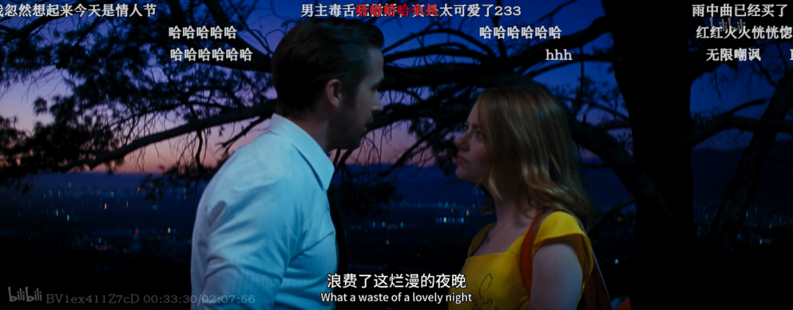
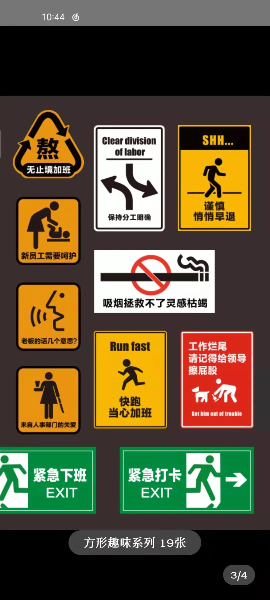
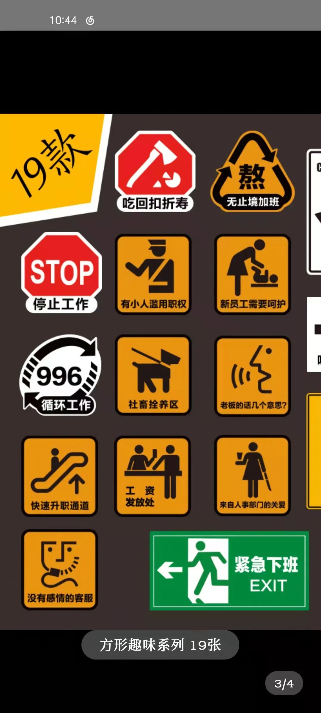
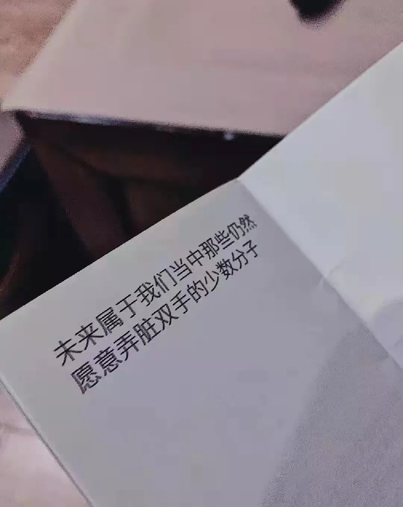

本文是张衔瑜第219篇推文
共计714个字，7张图
我认识一些有缩写癖好的人，试图把任何长一点的词都往下缩。任何超过四个字的词块，都想先减少一半；就连一个人的名字有三个字，他们会想说成如“张某”或者只有“张”。
当然中文也还好，毕竟每一个字都有所代表的含义。但事情到了英文之后就变得恼火很多，NOC, NYPD, MS SE SN, TC, WA你根本不知道他们在说什么。有时候甚至还会和ssfd这些词搞混。比如TC代表the cat, 而WA是作为动词的WhatsApp. 每天邮箱收一堆混乱的内容，人间是真的离谱。
时至今日，严丝密缝仍然是生活中最大的问题。在这一点上，矛盾论或者说二律背反或者随便什么一些我只知表面不知里手的名词所指向 表达得淋漓尽致。那种每一毫厘时间都扔在地上如作金石声的使用方式，就是严丝密缝。这种方式给人带来的快乐，没有感受过的 当然没有感受到过。感受过的，自然感受到过。可为什么成了生活中的大问题呢？
为什么呢？
想来一杯可乐。其实我只想要冰爽的气泡饮料呼噜过上颚时候的快乐感觉。至于这是一杯百事可乐还是可口可乐，无糖还是纤维，是铁罐的还是从机子里接在冰块玻璃杯里拿出来。那分明不是重点。只要一出气泡的好戏，只要是泡泡能和人类体温形成热力学定律里温差管的那个部分，就行。快乐么，Enjoy joyful Joyside 09年解散，十年后重组。来呗可乐Miss,来被可乐先生，来倍可乐衔瑜
认清形势！！
放弃幻想Fantasy 范特西 樊榻希 方忑溪 封妥嘘
请在睡觉前确认您存放在济南的电脑已经关闭。不然，万一电脑里存放的那些垃圾留到了泉水当中就不好了。一次不公正的司法有可能污染不只一台电子大脑的储存分区。袜。别总把要说的东西写在起雾的窗户上，有本事写在水上，古有王羲之，今有长沙砚瓦池不远处的玉林粉店的粉真不错蛮好。胶装的、裁边的，饭饭之交、胃您导航




